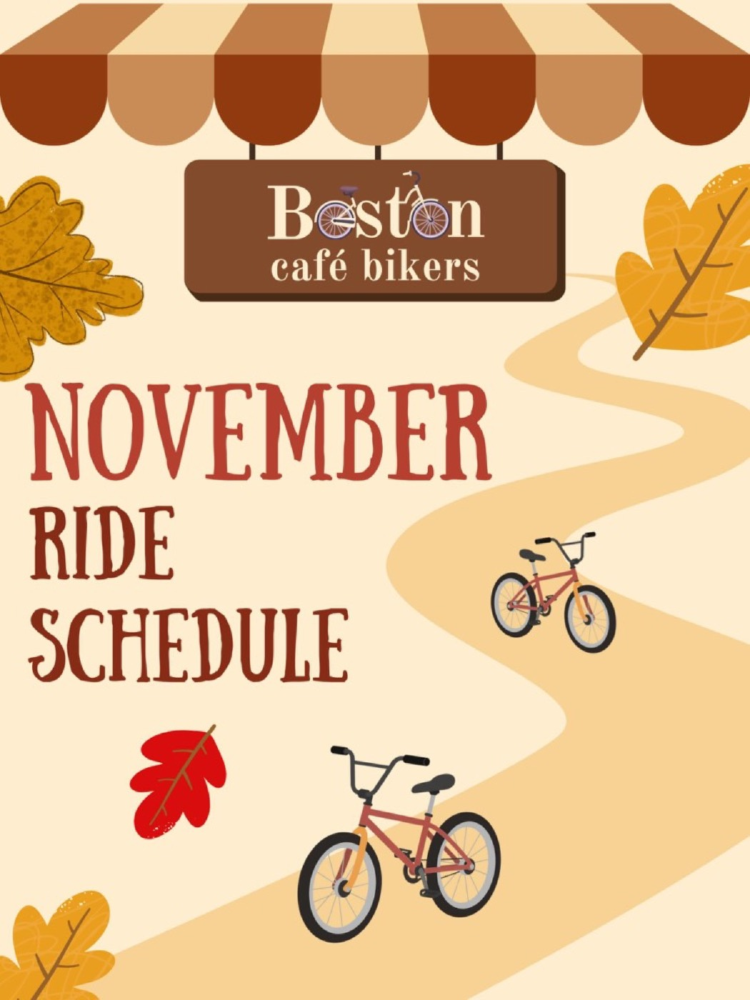

Your host
10 rides
this November, each one ending at a cafe or bakery
“Join Boston Cafe Bikers for a group ride starting at Union Square and ending at Butternut Bakehouse. All rides start at a BlueBike station.”
From the host's listing
Where you meet

61 Union Square, Somerville. Green Line and buses 87 and 91 stop here. © OpenStreetMap contributors
More rides that start near a T stop
 Minuteman Path to LexingtonSat 10:00 AM · Davis Square · Photo: 4300streetcar, CC BY 4.0
Minuteman Path to LexingtonSat 10:00 AM · Davis Square · Photo: 4300streetcar, CC BY 4.0Ruggles
Thankful for CoffeeSun 10:00 AM · Boston Cafe BikersBlackstone Square
Fall Bike Picnic and Food DriveSat 11:00 AM · Boston Pedals